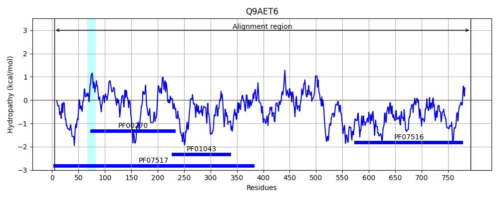

Hit Accession: Q9AET6
Hit TCID: 3.A.5.10.1
Hit Description: gnl|BL_ORD_ID|17724 gnl|TC-DB|Q9AET6|3.A.5.10.1 SecA-like protein - Streptococcus gordonii.
Mach Len: 791
e:0.000000
Query TMS Count : 0
Hit TMS Count: 1
TMS-Overlap Score: 0.000000
Predicted Substrates:None
BLAST Alignment:
Score: 1751 , Bit scores: 679 bits, E-value: 0.0e+00, Alignment length: 791, Percentage identity: 46
Query: 10 NELRLKSIRKIVKRINTWSDEVKSYSDDALKQKTIEFKERLASGVDTLDTLLPEAYAVAREASWRVLGMYPKEVQLIGAIVLHEGNIAEMQTGEGKTLTATMPLYLNALSGKGTYLITTNDYLAKRDFEEMQPLYEWLGLTASLGFVDIVDYEYQKGEKRNIYEHDIIYTTNGRLGFDYLIDNLADSAEGKFLPQLNYGIIDEVDSIILDAAQTPLVISGAPRLQSNLFHIVKEFVDTLIEDVHFKMKKTKKEIWLLNQGIEAAQSYFNVEDLYSEQAMVLVRNINLALRAQYLFESNVDYFVYNGD----IVLIDRITGRMLPGTKLQAGLHQAIEAKEGMEVSTDKSVMATITFQNLFKLFESFSGMTATGKLGESEFFDLYSKIVVQVPTDKAIQRIDEPDKVFRSVDEKNIAMIHDIVELHETGRPVLLITRTAEAAEYFSKVLFQMDIPNNLLIAQNVAKEAQMIAEAGQIGSMTVATSMAGRGTDIKLGEGVEALGGLAVIIHEHMENSRVDRQLRGRSGRQGDPGSSCIYISLDDYLVKRWSDSNLAENNQLYSLDAQRLSQSNLFNRKVKQIVVKAQRISEEQGVKAREMANEFEKSISIQRDLVYEERNRVLEIDDAENQDFKALAKDVFEMFVNEEKVLTKSRVVEYIYQNLSFQFNKDVACVNFKDKQAVVTFLLEQFEKQLALNRKNMQSAYYYNIFVQKVFLKAIDSCWLEQVDYLQQLKASVNQRQNGQRNAIFEYHRVALDSFEVMTRNIKKRMVKNICQSMITFDKEGMPVIHFP 796
N ++ ++KI+ +I ++ E+ S SD L++KT EFK+RLA G + LD LLPEAYAV RE R+LG++P +VQ++GAIVLHEGNIAEM TGEGKTLTATMPLYLNALSG+G L+T N YLA RD +EM P+Y +LGLT + EKR IY+ DIIYTTN LGFDYLI+NLA++ + +FL + NY IIDE+DSI+LD+AQTPL+ISGAPR+QSN + ++ V TL ED + K E+WL +GI AA+S+ + L+S++ LVR++NLALRA +++ + DY V + +VL+DR TGR++ T+LQ G HQAIEAKE ++++ + MA+IT+QNLFKLF SGMT TGK+ ESEF + YS VV++PT+ + R D PD++++++ EK A + ++ H G P+L+ T + E +E +S +L + I +NLL A NVA+EAQMIAE+GQ+G++TVATSMAGRGTDIKLG GV LGGL VI E MEN R+D Q+RGRSGRQGDPG S +ISL+D L+K+W + + YS + + + L R+ K++V KAQ+ SE +R + E+ +S+ IQR+L Y ERNR+LE + ++ + + V + E+ ++ +I + S + + + + V L E++L + ++S Y+ F + LKAID W+EQVDYLQQLK++++ + I EY++ A D FE M +K ++VKN+ S + + +G V++FP
Sbjct: 4 NFFHIRRLKKILAKIKSFEKEMSSLSDLDLQKKTDEFKKRLADG-ENLDQLLPEAYAVVREVDKRILGLFPYDVQVMGAIVLHEGNIAEMATGEGKTLTATMPLYLNALSGQGAMLVTPNSYLALRDAKEMGPVYRFLGLTIETAVRADESKPLETKEKRRIYQADIIYTTNSALGFDYLIENLAENKKNQFLREFNYVIIDEIDSILLDSAQTPLIISGAPRVQSNFYDMMNTLVQTLYEDEDYCYDDEKNEVWLTQKGIRAAESFLGLNHLFSKENQELVRHLNLALRAHMVYKKDQDYVVRQSENEAEVVLLDRATGRLMELTRLQGGQHQAIEAKEHVKLTQETRAMASITYQNLFKLFRKLSGMTGTGKVVESEFLETYSMSVVKIPTNCPVIRRDYPDQIYQTLPEKVFASLDEVKHYHAKGNPLLIFTGSVEMSEIYSSLLLREGIAHNLLNANNVAREAQMIAESGQLGAVTVATSMAGRGTDIKLGPGVADLGGLVVIGTERMENHRIDLQIRGRSGRQGDPGISKFFISLEDDLLKKWGPDWIKNFYRDYSPEDFKNNPILLKQRRFKKLVSKAQKASEGNAKLSRRLTLEYAQSMKIQRELTYAERNRLLEDTNEMEEEINRVIEYVIKQVAYEQSFENRADFYRFILHHFSNRAERIPQEFDIHSPKEVSHLLQAIAEQELLAKKSYLKSDKLYSQFQRLAILKAIDENWVEQVDYLQQLKSALSGFHTSNKKPIVEYYQEAYDGFEYMKERMKHQIVKNLLMSELALNPKGEVVMYFP 793 | Protein Hydropathy Plots: |
|---|
|  |
Pairwise Alignment-Hydropathy Plot:
|
|---|
|